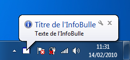

Action : Show the balloon of a Notify icon
This action will display on screen the tooltip on the warning icon during a specified period of time.
Warning : Make sure that the window is where your Notify icon is shown (on the screen) when this action is run.
Parameters
| Parameters | Descriptions |
|---|---|
| Notify icon concerned | Must be equal to the notify icon that should show the tooltip. |
| Time to display (in milliseconds) | Enter in this setting a numerical value defining the display time (in milliseconds, so 1000 = 1sec) of the balloon. |
Mistake not to commit : For parameter "Time to display (in milliseconds)", you can not use the resources of the project type and Picture type Other. Single resource of type text can be used.
Mistake not to commit : If you use variables in parameter "Time to display (in milliseconds)", make sure that the type of value of each of these variables is text (String), or a numeric value (Integer, Decimal, Double). Indeed, only text can be used in these settings.
Note : To check the type of a value, use the action Get the type of a variable, in General category.
Returned value
No value is returned by this action
Code Visual Basic.Net generated by SoftwareZator
Your_Notify_Icon.ShowBalloonTip(1000)
Runtimes errors
Sometimes a computer program encounters a problem during execution. Often, an error message is displayed. The table below allows you to determine why the error you encounter appears and how to correct it :
| Errors types | Descriptions | Resolve |
|---|---|---|
| System.ArgumentException or System.InvalidCastException |
This error occurs when the value of the parameter"Time to display (in milliseconds)" is not the text. Often the problem is caused by a variable used in these settings and have a value other than text. | To correct this error, check that all the values involved in this setting is Text (System.String) and make the necessary changes so that these values or text. For this, use the actions Get the type of a variable, Convert the value of a variable. |
Characteristic
| Type | Informations |
|---|---|
| Required level | Beginner |
| Category | Notify icon |
| Type of return value | {Nothing} |
| Works in the functions | Yes |
| Works in reporting zone | No |
| This action may receive children actions | No |